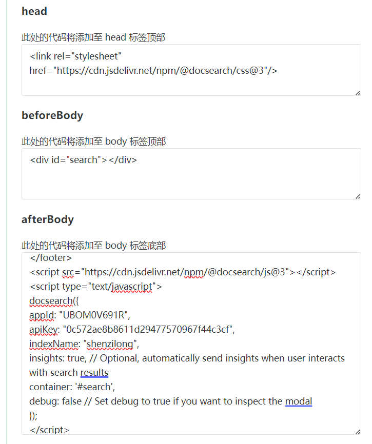
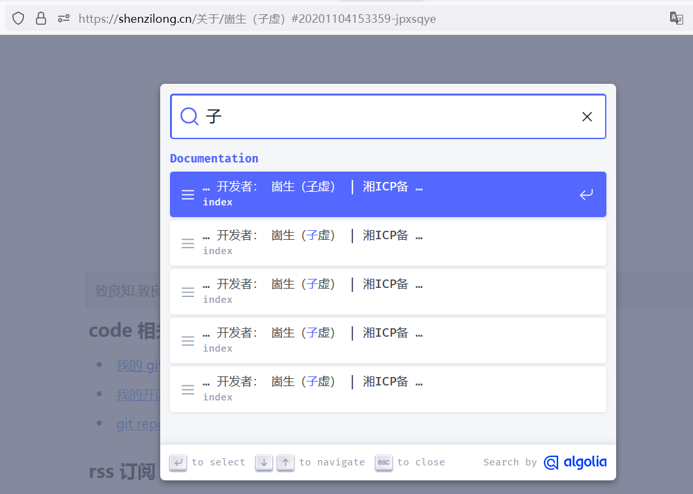
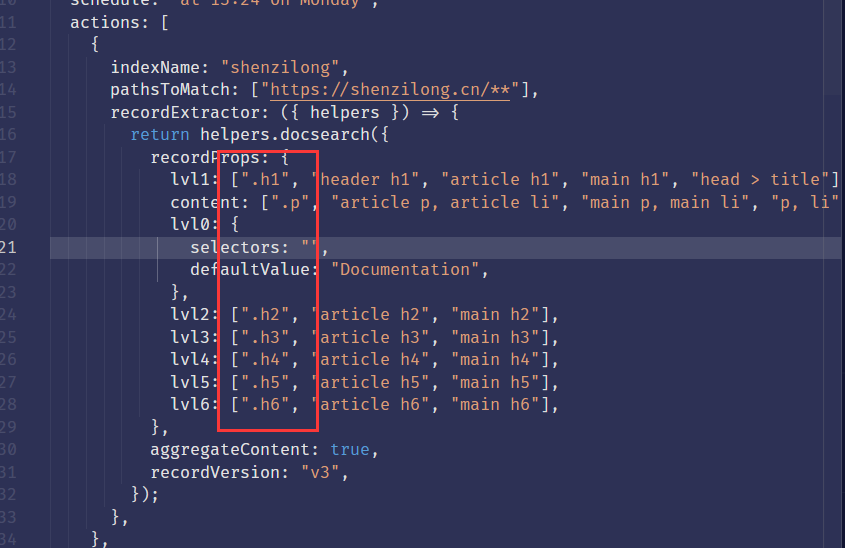
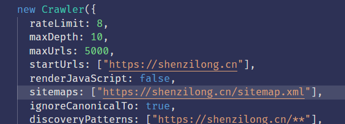

为OceanPress生成的网站添加搜索功能
目前（2023年10月5日）OceanPress_js 还没有直接支持搜索功能
但是，对于静态的文档网站早已有了通用的解决方案： 站内搜索方案
algolia docSearch
Algolia 可以说是这方面的老大了，vue.js 官网使用的就是他。
他的 DocSearch 对于开源项目文档博客是可以免费申请的
 algolia docSearch 清单
algolia docSearch 清单
algolia docSearch 清单当申请通过之后Algolia会发送一条邮件过来，将其中的代码添加到OceanPress的配置中

配置代码块注意：还需要添加一个div用来存放搜索框，以及修改aferBody中的 container 配置指向该div

还需要去 https://crawler.algolia.com 进行配置，添加如下的helper来帮助 algolia 识别 oceanpress 站点（注意这里的账号登录使用你收到邮件的邮箱，之前我使用 github 账号一直不能进去，想来是没有关联邮箱）

还有别忘了添加 sitemap.xml ,OceanPress 是支持生成站点地图的。
